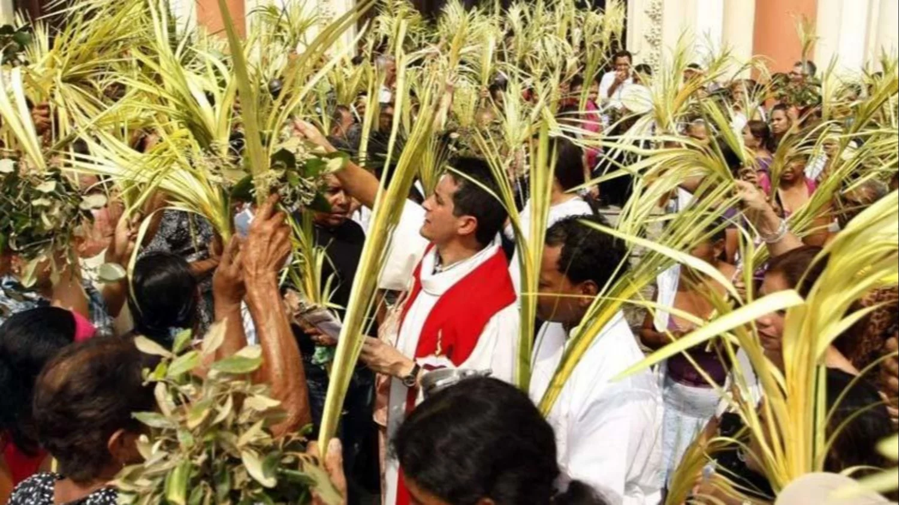
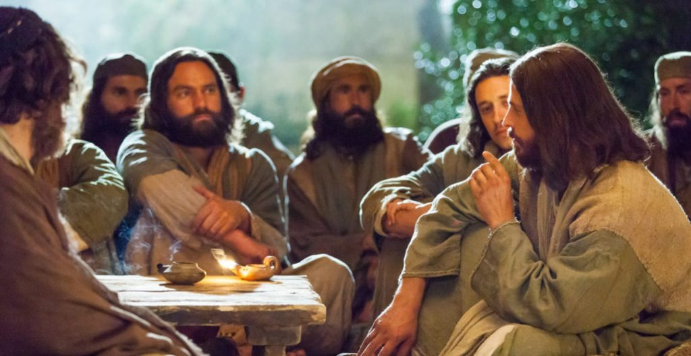
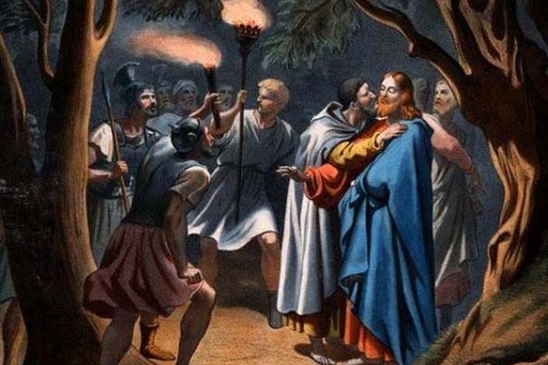
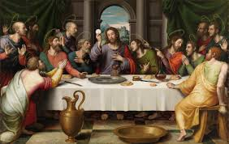
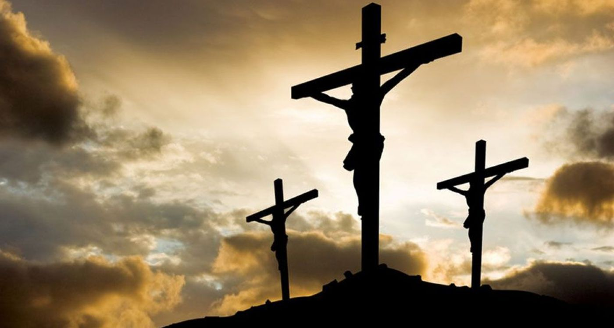
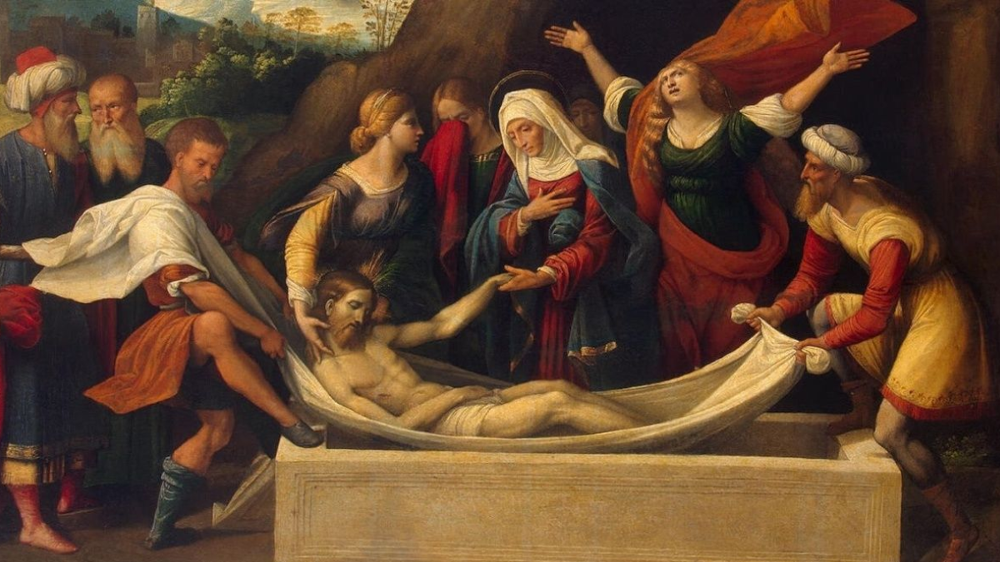
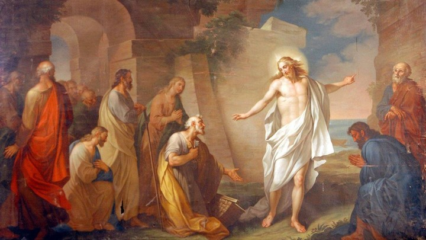

Domingo de Ramos
El Domingo de Ramos marca el inicio de la Semana Santa cristiana, conmemorando la entrada triunfal de Jesús en Jerusalén montado en un burro, aclamado por la multitud que extendía ramas de palma y mantos, reconociéndolo como el Mesías. Este día, lleno de alegría por la llegada de Jesús como rey, también anticipa el comienzo de su Pasión, la semana de su sufrimiento y muerte. La bendición y procesión con palmas son tradiciones centrales, simbolizando la victoria y la paz. Durante la liturgia, se lee la Pasión de Cristo, contrastando la aclamación inicial con el sacrificio venidero. El Domingo de Ramos cumple profecías bíblicas, señala la presentación pública de Jesús como Mesías y nos invita a reflexionar sobre su realeza de servicio y humildad, preparándonos para los misterios de la Semana Santa y la celebración de la Pascua.

Lunes Santo
El Lunes Santo recuerda la unción de Jesús en Betania, en casa de Lázaro, María y Marta, un acto que anticipa su muerte y sepultura, destacando el reconocimiento de su destino. También se conmemora la purificación del Templo de Jerusalén, donde Jesús expulsa a los mercaderes y cambistas, manifestando su autoridad divina y su celo por la santidad de la casa de oración.

Martes Santo
El Martes Santo se centra en las revelaciones de Jesús a sus discípulos sobre los eventos inminentes de su Pasión. Predice la traición de Judas Iscariote y las negaciones de Pedro, mostrando su conocimiento del futuro y la fragilidad humana ante las pruebas. Este día subraya la tensión creciente y la preparación para los momentos cruciales de la Semana Santa.

Miercoles Santo
Judas Iscariote acuerda con el Sanedrín traicionar a Jesús por treinta monedas de plata. Este día marca el final de la Cuaresma y el inicio de la Pascua. El Miércoles Santo conmemora la traición de Judas Iscariote, quien acuerda con el Sanedrín entregar a Jesús por treinta monedas de plata, un acto que sella el destino del Señor. Este día, a menudo llamado "Miércoles de Espías", marca la culminación de las conspiraciones contra Jesús y el inicio inminente de su Pasión, siendo tradicionalmente el último día de la Cuaresma y la puerta hacia el Triduo Pascual.

Jueves Santo
El Jueves Santo celebra la Última Cena de Jesús con sus discípulos, donde instituyó la Eucaristía al compartir el pan y el vino como su Cuerpo y Sangre, ofreciéndose como alimento espiritual. En este contexto, realizó el lavatorio de los pies, un acto de humildad y servicio que legó como ejemplo para sus seguidores. La noche concluye con su angustiosa oración en el Huerto de Getsemaní y su traición y arresto, marcando el inicio de su Pasión.

Viernes Santo
El Viernes Santo es un día de profundo recogimiento para los cristianos, dedicado a la conmemoración de la Pasión y Muerte de Jesucristo en la cruz. Se recuerda su juicio, la flagelación, la coronación de espinas, el doloroso camino del Vía Crucis y finalmente, su crucifixión en el Calvario. Es un día de ayuno, oración y reflexión sobre el sacrificio redentor de Jesús por la humanidad.

Sábado Santo
El Sábado Santo es un día de silencio y espera para los cristianos, un tiempo de luto y reflexión sobre la muerte de Jesús y su descenso al sepulcro. La Iglesia aguarda en oración la Resurrección del Señor, recordando la soledad de María. Por la noche, esta espera culmina en la celebración de la Vigilia Pascual, la liturgia más importante del año, donde se proclama con alegría la victoria de Cristo sobre la muerte, marcando el paso de la oscuridad a la luz y la promesa de la resurrección para todos.

Domingo de Pascua
Se celebra la Resurrección de Jesús, el evento central de la fe cristiana que marca su victoria sobre el pecado y la muerte. Es un día de alegría y celebración para los cristianos en todo el mundo.El Domingo de Pascua es el día culminante de la Semana Santa y la celebración central de la fe cristiana. Conmemora la Resurrección de Jesucristo de entre los muertos, el evento que confirma su divinidad y su victoria sobre el pecado y la muerte. La resurrección de Jesús es la promesa de la vida eterna para todos los creyentes y el fundamento de la esperanza cristiana. Las liturgias de este día están llenas de alegría y alabanza, con el repique de campanas, cantos festivos y la proclamación del Evangelio de la Resurrección. La Pascua es un tiempo de renovación espiritual y de celebración de la nueva vida en Cristo.

Jazer Esteban Tarifa Vargas - 2025